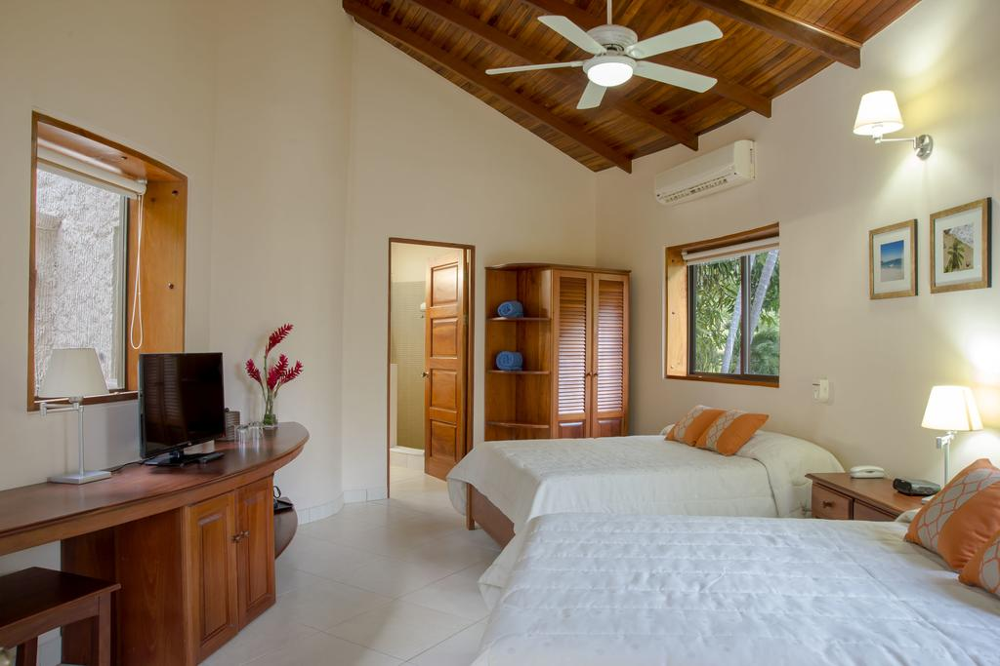
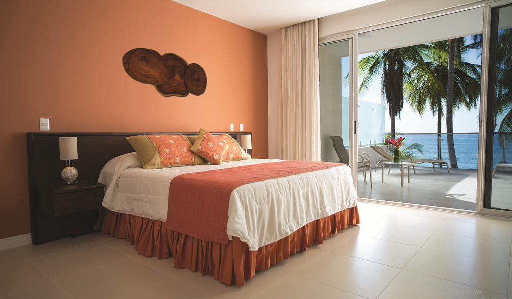
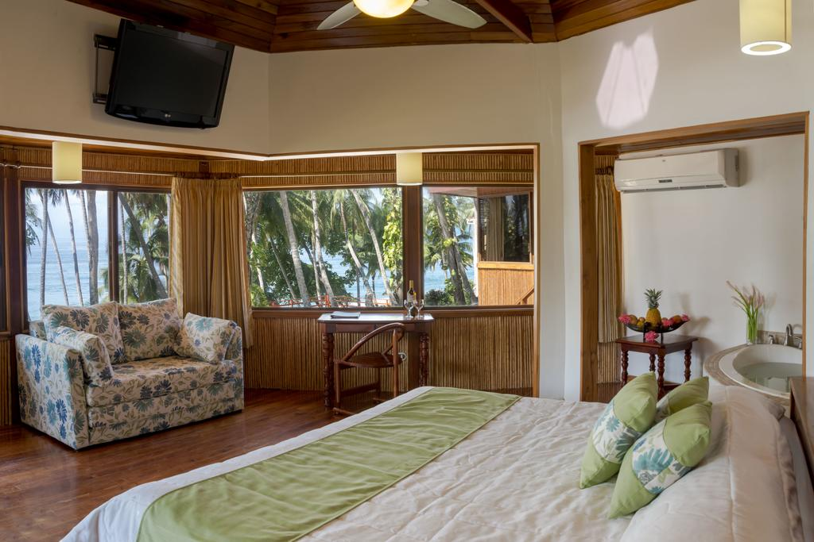

Suite Tropical
Esta suite cuenta con un minibar bien surtido, cafetera con café gratuito y balcón con vistas parciales al jardín y el mar. Dispone de aire acondicionado, ventilador de techo y escritorio. Incluye TV de pantalla plana por cable, radio y teléfono.
En el baño privado hay una ducha amplia, bañera de hidromasaje, secador de pelo y artículos de aseo. Esta habitación está situada en primera línea de playa y tiene terraza.

Habitación Deluxe - Frente a la playa
Esta habitación con encanto es amplia y ofrece un ambiente relajante que combina la elegancia tropical con un estilo moderno. El mobiliario está hecho a mano con madera procedente de la finca.
La habitación se sitúa en la zona más tranquila del hotel, a poca distancia a pie de la playa, y ofrece espectaculares vistas panorámicas a la hermosa playa Quizales y a la península. Incorpora 1 cama extragrande o 2 camas grandes y está equipada con aire acondicionado, cafetera con set de café diario gratuito, ventilador de techo, caja fuerte, teléfono, TV de plasma vía satélite, WiFi y baño amplio y moderno con ducha, secador de pelo y albornoz. Además, dispone de terraza al aire libre o balcón. Es el alojamiento ideal para parejas y recién casados.

Suite Tiki - Frente a la playa
Estas cabañas de estilo polinesio son muy románticas y se encuentran a 20 metros de la playa. Están decoradas con madera y bambú, y ofrecen un ambiente de casa de campo privada. Todas las suites incorporan 1 cama extragrande de madera con vistas al océano y baño privado con jacuzzi y ducha.
